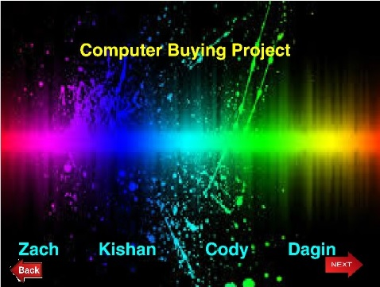
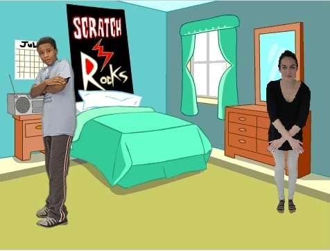

Name Assignment

Description:
Use scratch to design and create a program that shows my name. The requirements were to add a sprite for each letter in my name and give them 3 unique behaviors. The program needed to run when the green flag was clicked and for extra credit I added a function to reset the scene to the beginning each time the green flag was clicked.
Concepts Learned:
- Using event blocks - green flag clicked, when key pressed
- Conditional statements - used if statements to……
- Used loops - I used a forever block to……, I used a repeat until block to…….
- Sprites - I created my own sprites using the sprite editor, I used the library of sprites to find letters in my name and adjusted the costumes, .....
- Movement - I used the x and y values to make my sprites move to their original location when the green flag was clicked, I rotated the sprites to …….
Computer Buying Project
- Using event blocks - green flag clicked, when key pressed
- Conditional statements - used if statements to……
- Used loops - I used a forever block to……, I used a repeat until block to…….
- Sprites - I created my own sprites using the sprite editor, I used the library of sprites to find letters in my name and adjusted the costumes, .....
- Movement - I used the x and y values to make my sprites move to their original location when the green flag was clicked, I rotated the sprites to …….
Computer Buying Project

Description:
I used my people skills to create a powerpoint on scratch to present to the class. We were assigned to find 4 computers and choose one while giving a strong explanation on why it is the best. We used the different compenents of the computers ups and downs.
Concepts Learned
Final Project

Description:
In the final project I programmed a story on scratch that used broadcast to sensor the other person into talk. I had to make some sprites have a conversation and move around with animation. I learned to make the people move and talk and how to put code into backdrops for switching the scenes